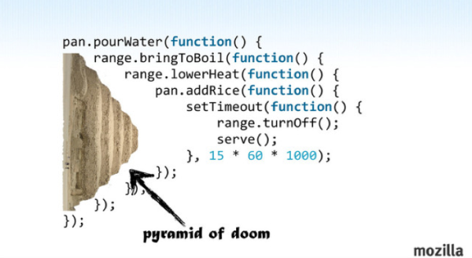

Asyncio with aiohtto
Python just got a lot faster... maybe...
Sync vs Async
Async Models
- Callbacks
- Promises
- Generators
- Async Await
Callbacks
Promises
var promise1 = request.get('www.google.com') .then(function(result) { if(err) { console.log(err) return '' } return result.body; }) .then(function(result) { console.log(result); return result; }); var promise2 = ... Promise.all([promise1, promise2]) .then(...)

Generators
def one(): return 1 >>> one() 1 def two(): yield 2 >>> two() <generator object two at 0x101218240>
yield from
def one(): for i in range(10): yield i def two(): for i in range(10): yield i def three(): for i in one(): yield i for i in two(): yield i def four(): yield from one() yield from two()
asyncio basics
- Event loop
- Event loop policies
- Coroutines
- Future & Task
Event loop management is abstracted with a policy pattern, to provide maximal flexibility for custom platforms and frameworks. Throughout the execution of a process, a single global policy object manages the event loops available to the process based on the calling context. A policy is an object implementing the AbstractEventLoopPolicy interface.
A coroutine is a generator that follows certain conventions. For documentation purposes, all coroutines should be decorated with @asyncio.coroutine, but this cannot be strictly enforced.
asyncio.Future class is almost compatible with concurrent.futures.Future. Differences: * result() and exception() do not take a timeout argument and raise an exception when the future isn’t done yet. * Callbacks registered with add_done_callback() are always called via the event loop’s call_soon_threadsafe(). * This class is not compatible with the wait() and as_completed() functions in the concurrent.futures package. * This class is not thread safe.
Schedule the execution of a coroutine: wrap it in a future. A task is a subclass of Future.
Debug
- Log coroutines defined but never “yielded from”
- call_soon() and call_at() methods raise an exception if they are called from the wrong thread.
- Log the execution time of the selector
- Log callbacks taking more than 100 ms to be executed. The BaseEventLoop.slow_callback_duration attribute is the minimum duration in seconds of “slow” callbacks.
- ResourceWarning warnings are emitted when transports and event loops are not closed explicitly.
Gotchas
Windows
- all unix functions ;)
- signals
- pipes
- ssl / subprocesses / ...
semantics & syntax
def two(): return 1 yield 2 >>> two() <generator object two at 0x101218b88>
lock = Lock() ... with (yield from lock):
Code
An event loop runs in a thread and executes all callbacks and tasks in the same thread. While a task is running in the event loop, no other task is running in the same thread. But when the task uses yield from, the task is suspended and the event loop executes the next task.
Blocking functions should not be called directly. For example, if a function blocks for 1 second, other tasks are delayed by 1 second which can have an important impact on reactivity.
Side-note - libraries
- Gevent / Eventlet
- Twisted
aiohttp
http client/server for asyncio
client example
import asyncio import aiohttp @asyncio.coroutine def fetch_page(url): response = yield from aiohttp.request('GET', url) assert response.status == 200 return (yield from response.read()) content = asyncio.get_event_loop().run_until_complete( fetch_page('http://python.org')) print(content)
server example
import asyncio from aiohttp import web @asyncio.coroutine def handle(request): name = request.match_info.get('name', "Anonymous") text = "Hello, " + name return web.Response(body=text.encode('utf-8')) @asyncio.coroutine def init(loop): app = web.Application(loop=loop) app.router.add_route('GET', '/{name}', handle) srv = yield from loop.create_server(app.make_handler(), '127.0.0.1', 8080) print("Server started at http://127.0.0.1:8080") return srv loop = asyncio.get_event_loop() loop.run_until_complete(init(loop)) try: loop.run_forever() except KeyboardInterrupt: pass
streaming
r = yield from aiohttp.request( ... 'get', 'https://github.com/timeline.json') >>> r.content <aiohttp.streams.StreamReader object at 0x...> >>> yield from r.content.read(10) '\x1f\x8b\x08\x00\x00\x00\x00\x00\x00\x03'
websockets
@asyncio.coroutine def websocket_handler(request): ws = web.WebSocketResponse() ws.start(request) while True: try: data = yield from ws.receive_str() if data == 'close': ws.close() else: ws.send_str(data + '/answer') except web.WebSocketDisconnectedError as exc: print(exc.code, exc.message) return ws
middleware
@asyncio.coroutine def middleware_factory(app, handler): @asyncio.coroutine def middleware(request): return (yield from handler(request)) return middleware